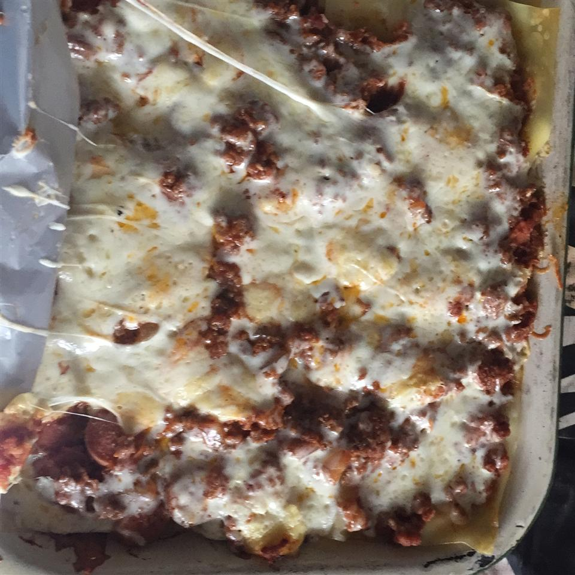

Lasagna

Brown meat with onions and bell peppers, and season to taste. Add tomato paste and water. Let simmer.
In a mixing bowl, mix ricotta cheese with beaten egg. Set aside.
Preheat oven to 370 degrees F (190 degrees C). Butter a 9 x 13 inch baking dish.
Begin layering all ingredients beginning with a few spoonfuls of tomato sauce. Follow with noodles, then ricotta mixture, and shredded mozzarella. Repeat until dish is filled.
Bake at 375 degrees F (190 degrees C) about 35 to 45 minutes, until bubbly. Let cool a couple of minutes before cutting.